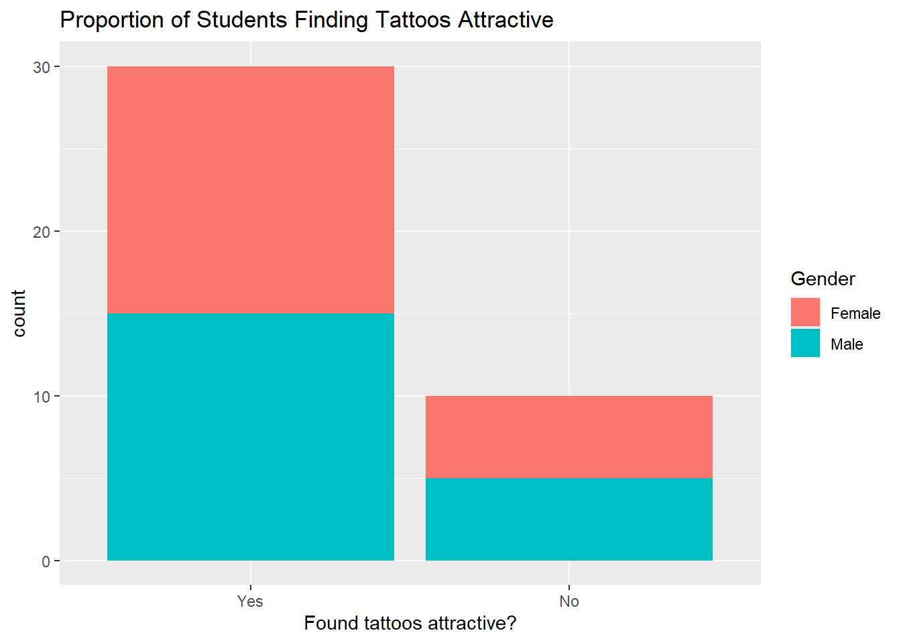

── Attaching core tidyverse packages ──────────────────────── tidyverse 2.0.0 ──
✔ dplyr 1.1.4 ✔ readr 2.1.5
✔ forcats 1.0.0 ✔ stringr 1.5.2
✔ ggplot2 4.0.0 ✔ tibble 3.3.0
✔ lubridate 1.9.4 ✔ tidyr 1.3.1
✔ purrr 1.1.0
── Conflicts ────────────────────────────────────────── tidyverse_conflicts() ──
✖ dplyr::filter() masks stats::filter()
✖ dplyr::lag() masks stats::lag()
ℹ Use the conflicted package (<http://conflicted.r-lib.org/>) to force all conflicts to become errors
library(mosaic)
Registered S3 method overwritten by 'mosaic':
method from
fortify.SpatialPolygonsDataFrame ggplot2
The 'mosaic' package masks several functions from core packages in order to add
additional features. The original behavior of these functions should not be affected by this.
Attaching package: 'mosaic'
The following object is masked from 'package:Matrix':
mean
The following objects are masked from 'package:dplyr':
count, do, tally
The following object is masked from 'package:purrr':
cross
The following object is masked from 'package:ggplot2':
stat
The following objects are masked from 'package:stats':
binom.test, cor, cor.test, cov, fivenum, IQR, median, prop.test,
quantile, sd, t.test, var
The following objects are masked from 'package:base':
max, mean, min, prod, range, sample, sum
library(vcd)
Loading required package: grid
Attaching package: 'vcd'
The following object is masked from 'package:mosaic':
mplot
library(visStatistics)library(resampledata)
Attaching package: 'resampledata'
The following object is masked from 'package:datasets':
Titanic
library(ggformula)library(infer)
Attaching package: 'infer'
The following objects are masked from 'package:mosaic':
prop_test, t_test
library(openintro)
Loading required package: airports
Loading required package: cherryblossom
Loading required package: usdata
Attaching package: 'openintro'
The following object is masked from 'package:mosaic':
dotPlot
The following objects are masked from 'package:lattice':
ethanol, lsegments
tattoo_modified_clean %>%summarize(prop =mean(Tattoo_Attractive =="Yes"), n =n())
prop n
1 0.75 40
Inference
The test result confirms if this percentage is significantly above 50%.
tattoo_modified_clean %>%drop_na() %>%gf_bar(~Tattoo_Attractive, fill =~Gender) %>%gf_labs(x ="Found tattoos attractive?",title ="Proportion of Students Finding Tattoos Attractive" )

Inference
Majority of them find tattoos attractive and it’s equally spread out
Again no association between gender and perception of tattoo attractiveness
mosaic::binom.test(~Tattoo_Attractive, data = tattoo_modified_clean, success ="Yes")
data: tattoo_modified_clean$Tattoo_Attractive [with success = Yes]
number of successes = 30, number of trials = 40, p-value = 0.002221
alternative hypothesis: true probability of success is not equal to 0.5
95 percent confidence interval:
0.5880380 0.8730852
sample estimates:
probability of success
0.75
mosaic::binom.test(~Tattoo_Attractive, data = tattoo_modified_clean, success ="Yes") %>% broom::tidy()
A sample proportion test was conducted to determine if the proportion of students who find tattoos attractive differs significantly from 0.5 (i.e., 50%).
Out of 40 students, 30 (75%) said they find tattoos attractive.
The sample proportion (p) = 0.75.
The p-value obtained from the test is 0.0022, which is less than 0.05. This means that the proportion of students who find tattoos attractive is significantly different from 50%.
The 95% confidence interval (0.588 to 0.873) indicates that the true proportion of students who find tattoos attractive likely falls between 59% and 87%.
Conclusion
The Chi sqaure result is Not Statistically Significant. We Fail to Reject the Null Hypothesis.
However, because the sample size is small (only 40 participants), the test may not capture real-world differences. A larger sample is needed to draw stronger and more reliable conclusions.
For now, we can only conclude that within this limited sample, gender has no impact on tattoo attractiveness.